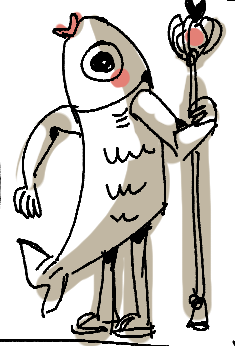

For a class I took at Oakland University, we had a group project where we made a card game using
Unity. The card game worked
like this:
2 players are dealt cards.
Each player drags a card to the center, which either heals themselves or damages their opponents.
The players play until one player runs out of hp or the time runs out.
I handled some of the art assets, the health/damage system, the dice roll, the turn system, and the
drag
and drop functionality.
We also learned about the scrum process during the making of this project.

One of the cards used in the game we programmed
Library System
This project was done for CIS-2141. I created
a
Java
application that acted as a pseudo library that you could rent and return books from. I had to
program a sort of database
for users and books that could be edited, added to, deleted, and accessed in general. I also had to
make sure that each user could
perform several other functions like checking what books are available, or renting or returning
books. This was my first
time working with hashMaps, and I learnt many convenient methods for sorting and creating classes.
Maze Game
In CIS-1500 the final project was to make a maze
minigame using JavaFX.
The player would start in the center of the maze, and could choose a room to move into. The room
would either generate
a random monster, or be empty. Once no monsters a in the room, the player could search the room for
gold and select a new room to
go into. I programmed this project using a 2d array as the base for the maze, and then separating
each type of task or character
into different class to make programming easier.